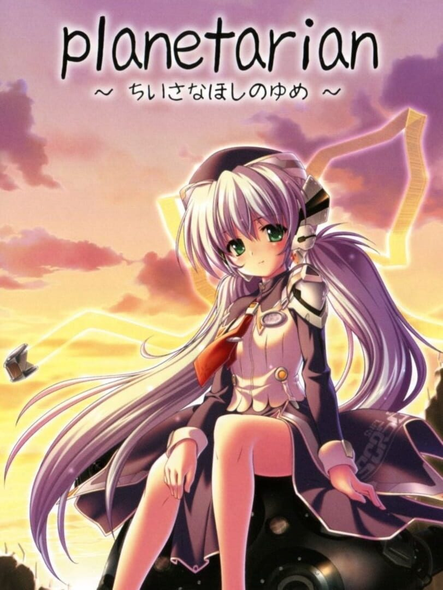

planetarian ~the reverie of a little planet~
planetarian ~the reverie of a little planet~
Details
|  | |
| Playtime | 2h 35m 0s |
| Last Activity | Never |
| Added | 12/30/2023 6:40:46 |
| Modified | 12/31/2023 8:36:34 |
| Completion Status | Played |
| Library | Steam |
| Source | Steam |
| Platform | PC (Windows) |
| Release Date | 11/29/2004 |
| Community Score | 73 |
| Critic Score | |
| User Score | |
| Genre | Adventure Visual Novel |
| Developer | Key |
| Publisher | PROTOTYPE Sekai Project Visual Arts Visual Art's Motto Visual Art's MottoSP |
| Feature | Single Player |
| Links | Official Wikipedia Steam Twitch |
| Tag | |
Description
Why don't you come to the planetarium?
The beautiful twinkling of eternity that will never fade, no matter what.
All the stars in the sky are waiting for you.
In time for the 10th anniversary since its original release in Japan, planetarian is an engaging and emotional visual novel from legendary game studio, Key. A sub-brand of VisualArt's, Key are also famed for creating Kanon, AIR, CLANNAD, Little Busters!, Rewrite, and Angel Beats!
Please do not divide Heaven in two...
It is thirty years after the failure of the Space Colonization Program.
Humanity is nearly extinct. A perpetual and deadly Rain falls on the Earth.
Men known as "Junkers" plunder goods and artifacts from the ruins of civilization.
One such Junker sneaks alone into the most dangerous of all ruins -- a "Sarcophagus City".
In the center of this dead city, he discovers a pre-War planetarium.
And as he enters he is greeted by Hoshino Yumemi, a companion robot.
Without a single shred of doubt, she assumes he is the first customer she's had in 30 years.
She attempts to show him the stars at once, but the planetarium projector is broken.
Unable to make heads or tails of her conversation, he ends up agreeing to try and repair the projector ...
For the first time, this heartwarming and memorable title is available on Steam!
It is fully voiced in Japanese, and can be experienced with both English and Japanese text.
Design, Scenario: Yuuichi Suzumoto
Music: Magome Togoshi
Voice Cast: Hoshino Yumemi - Keiko Suzuki
The Junker - Daisuke Ono
* This product is a localization of "planetarian ~chiisana hoshi no yume~ Memorial Edition", originally released for Windows on 30 April 2010.
What is Kinetic Novel?
A new form of entertainment for the sole purpose of storytelling -- not a novel, not an anime, not a game -- Kinetic Novel.
Made with the goal of providing the reader with an unprecedented sense of presence and empathy for the characters through the use of a high-quality scenario, graphics, music, and other production values.
The beautiful twinkling of eternity that will never fade, no matter what.
All the stars in the sky are waiting for you.
In time for the 10th anniversary since its original release in Japan, planetarian is an engaging and emotional visual novel from legendary game studio, Key. A sub-brand of VisualArt's, Key are also famed for creating Kanon, AIR, CLANNAD, Little Busters!, Rewrite, and Angel Beats!
Please do not divide Heaven in two...
It is thirty years after the failure of the Space Colonization Program.
Humanity is nearly extinct. A perpetual and deadly Rain falls on the Earth.
Men known as "Junkers" plunder goods and artifacts from the ruins of civilization.
One such Junker sneaks alone into the most dangerous of all ruins -- a "Sarcophagus City".
In the center of this dead city, he discovers a pre-War planetarium.
And as he enters he is greeted by Hoshino Yumemi, a companion robot.
Without a single shred of doubt, she assumes he is the first customer she's had in 30 years.
She attempts to show him the stars at once, but the planetarium projector is broken.
Unable to make heads or tails of her conversation, he ends up agreeing to try and repair the projector ...
For the first time, this heartwarming and memorable title is available on Steam!
It is fully voiced in Japanese, and can be experienced with both English and Japanese text.
Design, Scenario: Yuuichi Suzumoto
Music: Magome Togoshi
Voice Cast: Hoshino Yumemi - Keiko Suzuki
The Junker - Daisuke Ono
* This product is a localization of "planetarian ~chiisana hoshi no yume~ Memorial Edition", originally released for Windows on 30 April 2010.
What is Kinetic Novel?
A new form of entertainment for the sole purpose of storytelling -- not a novel, not an anime, not a game -- Kinetic Novel.
Made with the goal of providing the reader with an unprecedented sense of presence and empathy for the characters through the use of a high-quality scenario, graphics, music, and other production values.